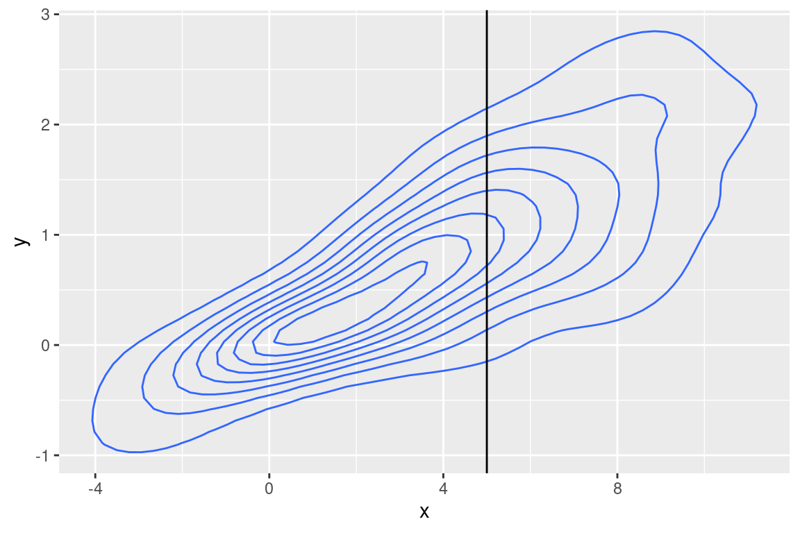
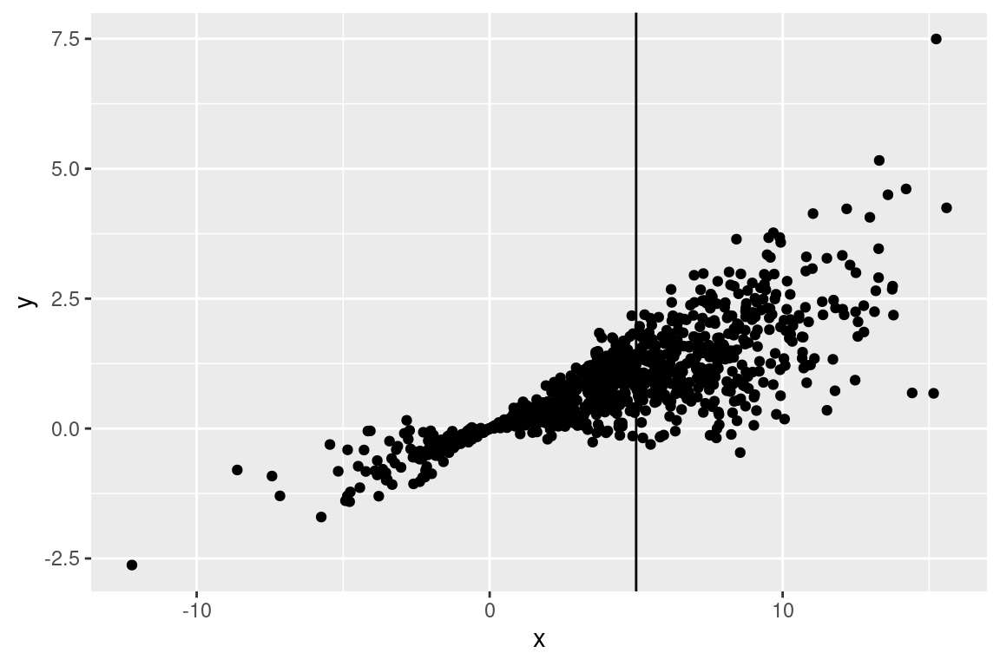

OLS for prediction with splines
Goals
- Motiviate making new regressors from old in an ML context
- Introduce some useful classes of non–linear transformations
- Polynomial series
- One–hot encodings
- Splines
Reading
TODO: fill this out.
Linear regression and least squares loss
Recall prediction problems: we observe IID pairs \((\boldsymbol{x}_n, y_n)\), and want to predict \(y_\mathrm{new}\) from \(\boldsymbol{x}_\mathrm{new}\). Specifically, we will focus on least squares loss \(\mathscr{L}(\hat{y}, y) = (\hat{y}- y)^2\), and try to find a function \(f(\boldsymbol{x})\) that minimizes the risk:
\[ \mathcal{R}(f) = \mathbb{E}\left[\mathscr{L}(f(\boldsymbol{x}_\mathrm{new}), y_\mathrm{new})\right] = \mathbb{E}\left[(f(\boldsymbol{x}_\mathrm{new}), y_\mathrm{new})^2\right]. \]
Let’s call a function (in general there may be many) that minimizes this risk \(f^*\):
\[ f^*(\cdot) := \underset{f}{\mathrm{argmin}}\, \mathcal{R}(f). \]
This is a functional optimization problem over an infinite dimensional space! You can solve this using some fancy math, but you can also prove directly that the best choice is
\[ f^*(\boldsymbol{x}_\mathrm{new}) = \mathbb{E}\left[y_\mathrm{new}| \boldsymbol{x}_\mathrm{new}\right]. \]
Suppose we consider any other function \(f(\cdot)\). The loss is larger, since
\[ \begin{aligned} \mathbb{E}\left[\left( y_\mathrm{new}- f(\boldsymbol{x}_\mathrm{new}) \right)^2\right] ={}& \mathbb{E}\left[ \mathbb{E}\left[\left( y_\mathrm{new}- f(\boldsymbol{x}_\mathrm{new}) \right)^2 | \boldsymbol{x}_\mathrm{new}\right] \right] &\textrm{(Tower property)} \\={}& \mathbb{E}\left[ \mathbb{E}\left[\left( y_\mathrm{new}- f^*(\boldsymbol{x}_\mathrm{new}) + f^*(\boldsymbol{x}_\mathrm{new}) - f(\boldsymbol{x}_\mathrm{new}) \right)^2 | \boldsymbol{x}_\mathrm{new}\right] \right] &\textrm{(add and subtract)} \\={}& \mathbb{E}\left[\left( y_\mathrm{new}- f^*(\boldsymbol{x}_\mathrm{new}) \right)^2\right] + \\& \mathbb{E}\left[\left( f^*(\boldsymbol{x}_\mathrm{new}) - f(\boldsymbol{x}_\mathrm{new}) \right)^2\right] + \\& 2 \mathbb{E}\left[ \mathbb{E}\left[y_\mathrm{new}- f^*(\boldsymbol{x}_\mathrm{new}) | \boldsymbol{x}_\mathrm{new}\right] \left( f^*(\boldsymbol{x}_\mathrm{new}) - f(\boldsymbol{x}_\mathrm{new}) \right) \right] &\textrm{(expand the quadratic, use conditioning)} \\={}& \mathbb{E}\left[\left( y_\mathrm{new}- f^*(\boldsymbol{x}_\mathrm{new}) \right)^2\right] + \\& \mathbb{E}\left[\left( f^*(\boldsymbol{x}_\mathrm{new}) - f(\boldsymbol{x}_\mathrm{new}) \right)^2\right] & \textrm{($\mathbb{E}\left[y_\mathrm{new}- f^*(\boldsymbol{x}_\mathrm{new}) | \boldsymbol{x}_\mathrm{new}\right]=0$ by definition)} \\\ge& \mathbb{E}\left[\left( y_\mathrm{new}- f^*(\boldsymbol{x}_\mathrm{new}) \right)^2\right]. & \textrm{(anything squared is greater than $0$)} \end{aligned} \]
Approximating the conditional expectation
We now know that the optimal regression function is given by \(f^*(\boldsymbol{x}) = \mathbb{E}\left[y| \boldsymbol{x}\right]\). The problem is how to estimate it.
We have been imagining that we know the full joint distribution of \(\boldsymbol{x}\) and \(y\). In that case, we can read off the conditional distribution by “slicing” through a particular \(\boldsymbol{x}\):
However, in practice, we don’t actually observe the full joint distribution, we observe data points. How should we proceed?

Linear approximation
Typically, we don’t know the functional form of \(\mathbb{E}\left[y| \boldsymbol{x}\right]\), because we don’t know the joint distribution of \(\boldsymbol{x}\) and \(y\). But suppose we approximate it with
\[ \mathbb{E}\left[y| \boldsymbol{x}\right] \approx \boldsymbol{\beta}^\intercal\boldsymbol{x}. \]
Note that we are not assuming this is true — we do not expect that \(\mathbb{E}\left[y| \boldsymbol{x}\right]\) is a linear function of \(\boldsymbol{x}\). Rather, we are finding the best approximation to the unknown \(\mathbb{E}\left[y_\mathrm{new}| \boldsymbol{x}_\mathrm{new}\right]\) amongst the class of functions of the form \(\boldsymbol{\beta}^\intercal\boldsymbol{x}_\mathrm{new}\).
The linear assumption gives us a finite–dimensional class of candidate functions, which gives us a tractable optimization problem. Under this approximation, the problem becomes \[ \begin{aligned} {\beta^{*}}:={}& \underset{\beta}{\mathrm{argmin}}\, \mathbb{E}\left[\left( y- \boldsymbol{\beta}^\intercal\boldsymbol{x}\right)^2\right] \\ ={}& \underset{\beta}{\mathrm{argmin}}\, \left(\mathbb{E}\left[y^2\right] - 2 \boldsymbol{\beta}^\intercal\mathbb{E}\left[y\boldsymbol{x}\right] + \boldsymbol{\beta}^\intercal\mathbb{E}\left[\boldsymbol{x}\boldsymbol{x}^\intercal\right] \boldsymbol{\beta}\right). \end{aligned} \]
Differentiating with respect to \(\boldsymbol{\beta}\) and solving gives
\[ {\boldsymbol{\beta}^{*}}= \mathbb{E}\left[\boldsymbol{x}\boldsymbol{x}^\intercal\right] ^{-1} \mathbb{E}\left[\boldsymbol{x}y\right]. \]
Note that this is the limiting quantity for \(\hat{\boldsymbol{\beta}}\), the OLS estimator! We have shown that, as \(N \rightarrow \infty\),
\[ \hat{\boldsymbol{\beta}}\rightarrow {\boldsymbol{\beta}^{*}}. \]
That is, the OLS estimator converges to the best linear estimator of the risk function! That is, in fact, the best quantity you could hope for it to converge to.
This is not a coincidence, since \(\hat{\boldsymbol{\beta}}\) is minimizing an objective function that is closely related to \(\mathcal{R}(\boldsymbol{\beta})\). Note that we cannot actually compute \({\beta^{*}}\) directly, since we still don’t know the joint distribution of \(\boldsymbol{x}\) and \(y\), and so cannot compute the preceding expectations. However, if we have a training set, we can approximate the expected loss:
\[ \hat{\mathcal{R}}(\boldsymbol{\beta}) := \frac{1}{N} \sum_{n=1}^N\mathscr{L}(\boldsymbol{\beta}^\intercal\boldsymbol{x}_n, y_n) = \frac{1}{N} \sum_{n=1}^N\left( y_n - \boldsymbol{\beta}^\intercal\boldsymbol{x}_n \right)^2. \]
For any particular \(\boldsymbol{\beta}\), \(\hat{\mathcal{R}}(\boldsymbol{\beta}) \rightarrow \mathcal{R}(\boldsymbol{\beta})\) by the LLN, so it might (tentatively) make sense to use \(\hat{\mathcal{R}}(\boldsymbol{\beta})\) as a proxy for \(\mathcal{R}(\boldsymbol{\beta})\). And of course, \(\hat{\boldsymbol{\beta}}:= \underset{\boldsymbol{\beta}}{\mathrm{argmin}}\, \hat{\mathcal{R}}(\boldsymbol{\beta})\), and since we have shown manually that \(\hat{\boldsymbol{\beta}}\rightarrow {\boldsymbol{\beta}^{*}}\), we see that \(\hat{\mathcal{R}}(\boldsymbol{\beta})\) is a good proxy for \(\mathcal{R}(\boldsymbol{\beta})\) in this particular case, in the sense that we learn a function, \(\hat{\boldsymbol{\beta}}^\intercal\boldsymbol{x}\), that converges, as \(N \rightarrow \infty\), to the best possible function in our function class: \(\hat{\boldsymbol{\beta}}^\intercal\boldsymbol{x}\rightarrow {{\boldsymbol{\beta}^{*}}}^\intercal\boldsymbol{x}\).
Regret minimization and basis expansions
We should not congratulate ourselves too hastily. After all, we would like to estimate \(f^*(\boldsymbol{x}) = \mathbb{E}\left[y\vert \boldsymbol{x}\right]\), not the best linear estimator. Hoever, as we have see already, we can easily form new regression estimators out of old ones by regressing on non–linear transformations of \(\boldsymbol{x}\). For example, when \(x\) is a scalar, we could consider the following hierarchy of linear regressions:
\[ \begin{aligned} f_0(x; \beta) ={}& \beta_0 \\ f_1(x; \boldsymbol{\beta}) ={}& \beta_0 + \beta_1 x\\ f_2(x; \boldsymbol{\beta}) ={}& \beta_0 + \beta_1 x+ \frac{1}{2} \beta_2 x^2\\ \vdots{}&\\ f_K(x; \boldsymbol{\beta}) ={}& \sum_{k=1}^K \frac{1}{k!} \beta_k x^k. \end{aligned} \]
As \(K\) increases, \(f\) becomes arbitrarily expressive — in fact, it can express any piecewise continuous function on a compact domain! However, the corresponding \(\boldsymbol{\beta}\) become harder and harder to estimate. In fact, as long as \(x\) takes on \(N\) distinct values, when \(K > N\) the matrix \(\boldsymbol{X}\) is not full-rank, and \(\hat{\boldsymbol{\beta}}\) is not uniquely defined.
This observation motivates a key (potential) tradeoff between model expressivness and estimability. Like many things in machine learning, the tradeoff can be seen by adding and subtracting things to the risk. First, note that we only care about \(\boldsymbol{\beta}\) (or, in general, a function \(f\)) through the risk. In particular, we want to minimize the “regret,” or the difference from the optimal prediction function:
\[ \textrm{Regret}(f) := \mathcal{R}(f) - \mathcal{R}(f^*) \ge 0. \]
In particular, suppose we fix a particular \(K\) and use the regression estimate \(\hat{f}_K(\boldsymbol{x}) = \sum_{k=1}^K \frac{1}{k!} \hat{\beta}_k x^k\). Letting \(f^*_K\) denote the minimizer of \(\mathcal{R}(\cdot)\) among functions of the form \(f_K(\cdot)\), the risk decomposes as
\[ \mathcal{R}(\hat{f}_K) - \mathcal{R}(f^*) = \underbrace{\mathcal{R}(\hat{f}_K) - \mathcal{R}(f^*_K)}_{\textrm{Estimation error $\ge 0$}} + \underbrace{\mathcal{R}(f^*_K) - \mathcal{R}(f^*)}_{\textrm{Model error $\ge 0$}}. \]
Each term is positive because (a) we cannot find the optimal \(f^*_K\) and (b) the optimal \(f^*_K\) is not, in general, equal to the true \(f^*\).
This decomposition is useful because you might expect \(K\) to act in opposite directions in these two terms — large \(K\) makes the first harder, since you have more to estimate, but large \(K\) makes the second easier, since you are more likely to be able to express something close to the optimal \(f^*\).
New regressors from old
Recall that we are trying to approximate
\[ \mathbb{E}\left[y| \boldsymbol{x}\right] \approx \boldsymbol{\beta}^\intercal\boldsymbol{x}. \]
In general, the left–hand side \(\mathbb{E}\left[y| \boldsymbol{x}\right]\) is not linear in the regressors, so linear regression will not be able to characterize \(\mathbb{E}\left[y| \boldsymbol{x}\right]\). How close can it get? The more regressors you include, the more expressive \(\boldsymbol{\beta}^\intercal\boldsymbol{x}\) is. But typically you only have a finite set of regressors. Does this upper bound the complexity of the functions you can fit?
It turns out that it does not, since we can take non–linear transformations of the regressors to make new regressors.
Taylor series
Suppose for simplicity that \(x\) is a scalar, and that \(\mathbb{E}\left[y| x\right]\) is an analytic function, meaning it admits a Taylor series expansion:
\[ \mathbb{E}\left[y| x\right] = {\beta^{*}}_0 + {\beta^{*}}_1 x+ \frac{1}{2} x^2 + \ldots + \frac{1}{k!} {\beta^{*}}_k x^k + \ldots = \sum_{k=0}^\infty \frac{1}{k!} {\beta^{*}}_k x^k. \]
Effectively, the Taylor series means that the true conditional expectation is in fact a linear function, but of an infinite number of regressors. We can imagine truncating at some \(K\) and running the regression using the features \(\boldsymbol{z}_n = (1, x, \frac{1}{2} x^2, \ldots, \frac{1}{K!} x^K)\). The error we commit is \(\sum_{k=K+1}^\infty \frac{1}{k!} {\beta^{*}}_k x^k\), which goes to zero as \(K \rightarrow \infty\).
The key is that \(\boldsymbol{z}_n\) is a non–linear function of \(\boldsymbol{x}_n\). In general, linear regression on non–linear functions of the regressors give more expressive function classes.
Note that you would have numerical problems if you actually used \(\boldsymbol{z}_n\), since the matrix \(\boldsymbol{Z}^\intercal\boldsymbol{Z}\) will typically be nearly numerically singular. Instead, you should use an orthogonal system of polynomials (like Legendre polyonmials). But typically you wouldn’t actually do this, you’d use splines (discussed below).
Fourier series
Another basis expansion that we will encounter later in the class is the Fourier basis. For simplicity, consider scalar \(x\in [0,1]\), fix \(K\), and define
\[ f_K(x; \boldsymbol{\beta}) = \beta_0 + \sum_{k=1}^K \left( \beta_k^s \sin(2 \pi k x) + \beta_k^c \cos(2 \pi k x) \right). \]
Note that the \(K\)–th order series has \(1 + 2 K\) coefficients to estimate. Fourier bases are, of course, good at representing periodic functions, like daily or weekly cycles in the data. It is also perhaps clearer for the Fourier basis how higher \(K\) allow you to express more wiggly functions than for the Taylor series basis.
Indicator functions
You have probably seen how to turn categorical variables into regressors using one–hot encodings. A simlar trick can be done with continuous random variables. Again, take the regressor \(x\) to be a scalar for simplicity. We can define a categorical variable “Is \(x\) is positive?” If we turn this into a one–hot encoding, we get
\[ z_n = \mathbb{I}\left(x> 0\right) = \begin{cases} 1 & \textrm{ if }x> 0 \\ 0 & \textrm{ otherwise}. \end{cases} \]
If we regress \(y_n \sim 1 + z_n\), our predictions \(\hat{y}_\mathrm{new}\) will be simply the averages of \(y_n\) among negative and positive training instances, respectively, according to whether \(x_\mathrm{new}\) is postive or negative.
Similarly, for any partition \(\rho_0, \ldots, \rho_K\) of the \(x\)–axis, we can construct the indicators
\[ \boldsymbol{z}^0_n = \begin{pmatrix} \mathbb{I}\left(\rho_0 \le x< \rho_1\right) \\ \mathbb{I}\left(\rho_1 \le x< \rho_2\right) \\ \vdots\\ \mathbb{I}\left(\rho_k \le x< \rho_{k+1}\right) \\ \vdots\\ \mathbb{I}\left(\rho_{K-1} \le x< \rho_{K}\right) \\ \end{pmatrix}. \]
Regressing on \(\boldsymbol{z}_n\) so constructed produces piecewise linear fits within the intervals, within which the regression returns the average of the training responses.
We will see later that tree–based methods (for example, random forests) are exactly of this form, but in multiple dimensions, and where the partitions are encoded by decision trees and chosen optimally in some sense. However, keeping the trees fixed, tree–based methods are simply regressing on indicators in this way!
Splines
One problem with indicator functions is that the resulting function approximations are “bumpy” — they are discontinuous and have zero derivatives everywhere.
However, the indicator functions can be modified in a simple way to produce piecewise linear functions. In addition to the regressors \(\boldsymbol{z}^0_n\) defined above, define
\[ \boldsymbol{z}^1_n = \begin{pmatrix} \mathbb{I}\left(\rho_0 \le x< \rho_1\right) (x- \rho_0) \\ \vdots\\ \mathbb{I}\left(\rho_k \le x< \rho_{k+1}\right)(x- \rho_k) \\ \vdots\\ \mathbb{I}\left(\rho_{K-1} \le x< \rho_{K}\right)(x- \rho_{K-1}) \\ \end{pmatrix}. \]
Regressing \(y_n \sim \boldsymbol{z}^0_n + \boldsymbol{z}^1_n\) produces a piecewise linear fit. Effectively, it produces a separate first–order Taylor series approximation within each segment. The idea can be generalized using regressors of the form
\[ \boldsymbol{z}^p_n = \begin{pmatrix} \mathbb{I}\left(\rho_0 \le x< \rho_1\right) (x- \rho_0)^p \\ \vdots\\ \mathbb{I}\left(\rho_k \le x< \rho_{k+1}\right)(x- \rho_k)^p \\ \vdots\\ \mathbb{I}\left(\rho_{K-1} \le x< \rho_{K}\right)(x- \rho_{K-1})^p \\ \end{pmatrix}, \]
regressing on which produce \(p\)–th order polynomials within each bucket.
Using splines for continuous functions
One problem with the preceding construction is that the fitted functions are still (in general) discontinuous. For example, consider the piecewise linear regression function
\[ f_2(x) = \boldsymbol{\beta}^\intercal\boldsymbol{z}^0_n + \boldsymbol{\gamma}^\intercal\boldsymbol{z}^1_n. \]
In between \(\rho_0\) and \(\rho_1\), \(f_2(x)\) is linear, and so continuous. However, it may have different values at the knots. For example,
\[ \begin{aligned} f_2(\rho_1^- | \boldsymbol{\beta}) ={}& \beta_1 + \gamma_1 (x- \rho_0) = \beta_1 + \gamma_1 (\rho_1 - \rho_0) & \textrm{ just to the left of $\rho_1$} \\ f_2(\rho_1^+ | \boldsymbol{\beta}) ={}& \beta_2 + \gamma_2 (x- \rho_1) = \beta_2. & \textrm{ just to the right of $\rho_1$} \\ \end{aligned} \]
We can thus enforce continuity by requiring
\[ \begin{aligned} \beta_1 + \gamma_1 (\rho_1 - \rho_0) ={}& \beta_2 \\ \beta_2 + \gamma_2 (\rho_2 - \rho_1) ={}& \beta_3 \\ \vdots& \\ \beta_{K-1} + \gamma_{K-1} (\rho_{K-1} - \rho_{K}) ={}& \beta_K \\ \end{aligned} \]
Note that this amounts to \(K-1\) linear constraints for \(K\) intervals — one at each boundary — which can, in general, be written in the form
\[ A \begin{pmatrix} \boldsymbol{\beta}\\ \boldsymbol{\gamma} \end{pmatrix} = 0. \]
This linear restriction reduces the free parameter space from \(2K\) dimensions to \(2K - (K - 1)\), and can be produced by linearly reparameterizing the equations. Note that the first derivatives of a piecewise linear approximation cannot be made continuous. However, the first derivatives of a piecewise quadratic approximation can be, and so regressing on \(\boldsymbol{z}^0_n\), \(\boldsymbol{z}^1_n\), and \(\boldsymbol{z}^2_n\) can be expressed using linear constraints as a function with continuous first derivatives but piecewise discontinuous second derivatives, and so on.
Standard nomenclature describes an “order–\(M\)” spline as consisting of piecewise \(M-1\)–order polynomials, with \(M-2\) continuous derivatives. For example, a continuous piecewise quadratic spline consists of order \(2\) polynomials, has \(1\) continuous derivatives, and is a an order–\(3\) spline. e (Hastie, Tibshirani, and Friedman (2009) 5.2)
In practice, we do not select a basis and then analytically derive linear constraints. Instead, we can use an iterative construction known as B–splines which gives an explicit representation of the same basis in which continuity is automatically enforced. See the appendix to Hastie, Tibshirani, and Friedman (2009) Chapter 5.
Extrapolation
Note that there are different things you can do beyond the boundary of your partition. Three are common:
- Keep the order of the spline the same (this can result in crazy behavior)
- Restrict the order beyond the boundary to be linear or constant
Usually the latter does better, because usually realistic functions are not in fact unbounded polynomials. However, in a sense, the training data cannot tell you what goes on beyond its own extrema.
Bibliography
Hastie, T., R. Tibshirani, and J. Friedman. 2009. The Elements of Statistical Learning: Data Mining, Inference and Prediction. 2nd ed. Springer.